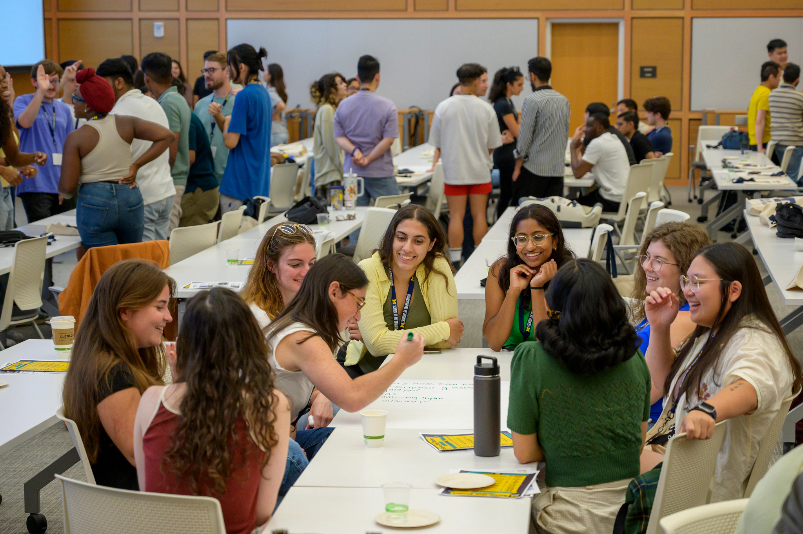

Launch Your Engaged Learning Journey
Transform your academic foundation into real-world impact. Thoughtful preparation helps you identify what you hope to learn, understand who may be affected by the work, and approach a partner's goals with curiosity and respect.

Why the Work Starts Before the Project
Engaged learning at UMSI is different from a traditional classroom assignment. You are entering a complex, unscripted environment where technical decisions intersect with human lives, organizational cultures, and real community needs.
The first phase is not about jumping immediately into execution. It is about building the foundation for ethical, sustainable engagement. Reflecting on your positionality, reviewing your team's capacity, and listening carefully to a partner's goals can prevent misaligned expectations and unintended harm.
Your role is not to enter an organization or community as an outside expert who will fix a problem. Your role is to listen, ask questions, contribute your developing expertise, and work alongside people who understand their own organization and community.
Preparation Goals
- Develop social and community awareness: Examine your identity, positionality, assumptions, and privileges. Learn about the community's history and consider how power may affect participation and decision-making.
- Understand expectations: Review program requirements, project commitments, leadership responsibilities, deadlines, and expected outcomes.
- Assess team readiness: Identify each team member's skills, interests, availability, responsibilities, and learning goals. Determine where the team needs additional knowledge or support.
- Begin project scoping: Learn about the organization's needs, intended users, constraints, and desired outcomes before committing to a solution.
Questions to Consider
- What do I hope to learn from this experience?
- Who will be affected by the project and its outcomes?
- What assumptions am I making about the partner, community, or project?
- What knowledge and skills does my team already have?
- What knowledge, lived experience, or perspective is missing from our team?
- How will the partner participate in project decisions?
- What would a mutually beneficial outcome look like?
Recommended Preparation Process
- Reflect on your position. Identify the experiences, identities, assumptions, and areas of privilege that may shape your approach.
- Learn about the context. Research the organization, community, project history, affected stakeholders, and broader social conditions.
- Set learning goals. Record the technical, professional, interpersonal, and ethical skills you want to develop.
- Review team capacity. Compare the team's skills and availability with the likely needs of the project.
- Identify open questions. Write down what your team needs to learn from the partner before confirming scope, methods, or deliverables.
- Plan how you will listen. Decide how the team will document partner feedback, confirm shared understanding, and make decisions transparently.
Featured Preparation Resources
- Social Identity Snapshot - Reflect on self-awareness and positionality before entering community contexts.
- “Check Yourself” Community Engagement Checklist - Audit personal assumptions and ethical readiness.
- IAP2 Spectrum of Public Participation - Understand levels of community involvement and decision-making power.
- Project Scoping Handout and Terms - Translate partner needs into realistic project goals.
- Student Organization Officer Guide - Review roles and commitments for student organization leaders.
- Project Manager Guide - Clarify expectations for student project leads.
- Project Manager Commitment Form - Document responsibilities for student leads.
- Project Management Worksheet - Clarify objectives, roles, timelines, and what can be shared with the client.